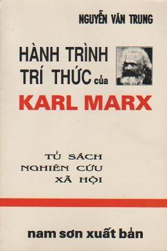
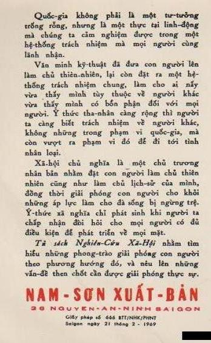

Khi cuốn “Tìm Hiểu Triết Học Karl Marx” của ông Trần văn Toàn ra đời, nhà xuất bản đã tưởng phải lâu năm mới tiêu thụ hết hai nghìn cuốn. Nhưng điều không ngờ là sau vài tháng, cuốn sách đã được tái bản. Chắc nhiều độc giả không khỏi thất vọng vì cuốn sách khó đọc, vì tác giả đã dùng một ngôn ngữ triết lý, chuyên môn để trình bày một triết học vốn đã khó hiểu. Nhưng sự kiện trên phải chăng biểu lộ một ước muốn tìm hiểu thực sự sự thực. Từ lâu, rất ít có những sách báo trình bày chủ nghĩa Mác với một tinh thần đáng cho những người, nhất là giới thanh niên, ham học hỏi, ước muốn tìm hiểu thực sự sự thực có thể tin tưởng được.
Có một thái độ chống Cộng, chỉ nghĩ đến việc chống, chỉ “hùng hục” chống mà không muốn hay không cho ai tìm hiểu Cộng-sản như thể sợ tìm hiểu sẽ không chống Cộng được nữa, và nếu buộc phải nói tới lý thuyết, thì cũng chỉ lập lại một vài lời kết án hay tuyên bố chủ nghĩa Mác-xít đã lỗi thời rồi…
°
°
Thực ra chủ nghĩa Mác chưa lỗi thời, phong trào Cộng-sản chưa trở thành một sự kiện lịch sử đã qua vì phong trào Cộng-sản vẫn đang làm lịch sử và trên bình diện tư tưởng, chủ nghĩa Mác vẫn cống hiến một số phạm trù, lược đồ xác đáng để lãnh hội và phân tách những thực tại chính trị, xã hội, văn hóa. Sự kiện một số người đồ đệ biến chủ nghĩa Mác thành giáo điều, cố định, ngưng động, nghèo nàn, “kinh viện” theo kiểu nói của E. Mounier có lẽ đã chứng minh phần nào chủ trương của những người coi chủ nghĩa Mác là lỗi thời. Nhưng còn chính tư tưởng của MARX? Một người như Sartre đã đi đến chỗ nhìn nhận chủ nghĩa hiện sinh của mình chỉ là một vùng của chủ nghĩa Mác, chỉ là một nỗ lực làm sống động, cụ thể hóa những lược đồ, ý niệm mác-xít, một triết lý độc nhất của thời đại ta, thì dù có không đồng ý với lập trường đó, cũng không thể không suy nghĩ về thái độ của Sartre.[1]
°
°
Trước chủ nghĩa Mác, có thể tìm hiểu chủ nghĩa Mác là gì, Mác chủ trương những gì, duy vật, vô thần là gì. Nhưng cũng có thể tìm hiểu tại sao Mác đã chủ trương duy vật, vô thần, tại sao một người đã đi đến chỗ theo chủ nghĩa Mác.
Chúng tôi theo lối tìm hiểu thứ hai, vì cho rằng chỉ lối tìm hiểu đó mới có thể không những đưa tới một sự hiểu biết chân thực về chủ nghĩa Mác, mà còn đưa tới một thái độ xác đáng đối với chủ nghĩa trên.
Những nỗ lực phân tách, suy nghĩ của chúng tôi trong cuốn sách này chỉ hạn định vào việc tìm hiểu điều mà chúng tôi gọi là “Hành trình tri thức của Karl-Marx”.
Chúng tôi muốn trở về nguồn gốc tư tưởng của Mác, để tìm hiểu khởi điểm dự phóng căn bản của ông, cái đã đưa ông đến chỗ chủ trương duy vật hay vô thần… và nhận định phê phán ông căn cứ vào khởi điểm, dự phóng căn bản đó.
Dự phóng căn bản của Mác là muốn đi tới cùng, cái triệt để, đồng thời muốn bao quát cái toàn thể. Nhưng vấn đề là có thể đạt tới cái triệt để, cái toàn thể, thực hiện được cái tuyệt đối hay đó chỉ là một ảo tưởng. Nếu chủ nghĩa Mác có những ảo tưởng, những ảo tưởng đó gắn liền với dự phóng căn bản của chính Mác.
Một đặc điểm của Mác là thái độ phê phán; phê phán đến tận cùng, phê phán phê phán hay là phê phán những ảo tưởng phê phán của lối phê phán sặc mùi đạo đức hay lý thuyết suông…Có thể nói một yếu tính của chủ nghĩa Mác là tinh thần phê phán triệt để. Nhưng trong thực tiễn, chủ nghĩa Mác đôi khi lại biến thành giáo điều mệnh lệnh, một uy quyền cấm đoán mọi phê phán. Nếu Mác còn sống, có thể bị kết án là theo chủ nghĩa xét lại không! Nhưng chính Mác có trách nhiệm về những mâu thuẫn giữa lý thuyết và thực tiễn Mác-xít?
Đó là một vài điểm chúng tôi muốn tìm hiểu. Chúng tôi không dám cho rằng mình hiểu đúng vì chính những người tự nhận là Mác-xít cũng còn không nhìn nhận nhau đã hiểu đúng Mác-xít. Nhưng vấn đề Mác-xít không phải chỉ là một vấn đề của người Mác-xít, mà là một vấn đề của thời đại, liên quan đến số phận của dân tộc, của cả nhân loại. Do đó, mỗi người đi đến chủ nghĩa đó với những cố gắng tìm hiểu chân thành và trung thực, mà lúc này, bây giờ mình tưởng là đúng trong một tinh thần luôn luôn xét lại, và sẵn sàng đón nhận những sự thực lúc này, bây giờ chưa khám phá ra.
Chú thích:
CHÚ THÍCH
1.- Những sách viết về cuộc đời Marx tương đối ít. Mấy cuốn giá trị được chú ý hơn cả là:
Karl-Marx, sa vie et son oeuvre. Auguste Cornu. Alcan. Paris 1934.
Karl-Marx et Friedrich Engels mới ra được 2 tomes của Aug. Cornu. P.U.F
Karl-Marx của Isaĩh Berlin bản tiếng Anh. Oxford Univ. 1952, bản tiếng Pháp trong Collection de poche Indeés. Gallimard 1962.
Karl-Marx, Geschile seines Lebens của Franz Mehring. Lepzig. 1918 có bản dịch tiếng Anh.
Karl-Marx, của B. Nicholaiesweski và O. Maenchen-Helphen, bản dịch tiếng Pháp, Paris 1937.
Karl-Marx, essai de biographie intellectuelle. M. Rubel. Paris 1957
Trong phần giới thiệu cuộc đời Marx tôi đã theo cuốn của Nicholaiesweski và M. Helphen vì đó là cuốn khá đầy đủ, rất nhiều chi tiết nhất là về cuộc đời tranh đấu chính trị của Marx.
2.- Về hai bản kê khai tác phẩm và lược tóm cuộc đời, vì cũng không thể làm đầy đủ hơn được, nên tôi đã trích lại của M. Rubel trong Pages chosies pour une éthique socialiste, Introduction à l’éthique marxienne. Paris 1948 do một số sinh viên của chứng chỉ lịch sử Triết học Tây phương những niên khóa 1964-65 và 65-66 dịch